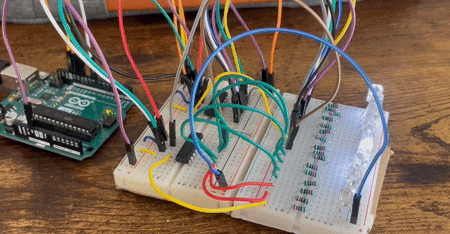

Breathe
Electronics and art
Jun 2023 - ...
Designed and manufactured an animated wall mounted lung skulpture. This project was dedicated to combining art with electronics and contol. The lungs were animated to cycle through inhilations and exhilations to give a calming effect.
Programming and animation was completed in the Arduino IDE. All leds were contolled by three output cables from the arduino by multiplexing the outputs with shift registers. The code for this required the continual pushing and storing of bits on the registers.
Components; 1xArduinoUno, 6x74HC595 shift resitors, 50x220 Ohm resistors, 50xleds, Assorted 3D printed parts.